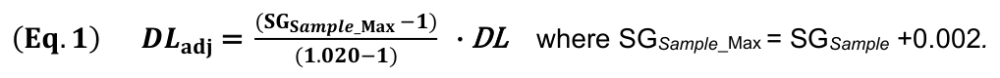
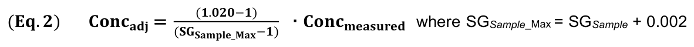

Technical Documents · ISL TD2027CG/LH
Edition v1.0, 2027 (version 1.0) · effective 1 January 2027 · current
Retrieved on 26 November 2026 from https://www.wada-ama.org/sites/default/files/2026-09/isl_td2027cg-lh_v1.0_eng.pdf
Editions: v1.0, 2027 (current) · v1.0, 2021 · v1.0, 2019 · v1.0, 2018 · v1.0, 2017
p. 1
Analysis, Reporting & Management of Urinary Human Chorionic Gonadotrophin (hCG) and Luteinizing Hormone (LH) Findings in Male Athletes
1.0 Introduction
The purpose of this Technical Document (TD), which constitutes an integral part of the International Standard for Laboratories (ISL[1]), is to ensure a harmonized approach in the analysis, reporting and management of findings for elevated urinary concentrations of human Chorionic Gonadotrophin (hCG) and Luteinizing Hormone (LH) in Doping Control analysis.
1.1 hCG and LH Structure and Physiology
a) In men, hCG and LH stimulate the production of testosterone by the Leydig cells by binding to and activating the CG/LH receptors.
b) hCG and LH are both heterodimeric proteins comprised of two (2) polypeptide chains: a common α-subunit and a unique, hormone-specific β-subunit (hCGβ, LHβ). Only the α/βheterodimer has biological activity, which is determined by the β-subunit.
c) Both hCG and LH occur in urine in different molecular forms, including the α/β- heterodimers (intact and 'nicked'¹ ) as well as the dissociated α- and β-subunits and their degradation products (e.g. the β-core fragments, nicked products, etc.).
d) The α/β-heterodimeric hCG is either undetectable or found at very low levels (usually below 2 IU/L) in urine from healthy males.
However, elevated levels of α/β-heterodimeric hCG (intact and nicked), free hCGβ, and hCGβcore fragment are produced by certain malignant tumors, especially in cases of testicular cancer. The α/β-heterodimeric hCG may also be produced by extra-testicular germ cell tumors. In addition, hCGβ may be produced by various non-trophoblastic cancers (see Annex 1).
e) LH is normally detectable in urine from healthy men. LH has a shorter half-life in circulation than hCG. Circulating LH is subject to negative feedback by the production of endogenous testosterone or the administration of androgens.
¹In the 'nicked' hCG α/β-heterodimer, the β-subunit is (usually) cleaved between aminoacid residues 47 and 48. Although cleaved, the α- and β-subunits in the nicked hCG are held together by non-covalent bonds.
p. 2
1.2 hCG and LH in Doping
a) hCG and LH are prohibited in male Athletes only.
b) The finding of the α/β-heterodimer of hCG in the urine of male Athletes at concentrations greater than (>) the established Decision Limit (DL) may indicate hCG Use for doping purposes. However, because elevated urinary hCG is also associated with certain pathologies, such as testicular cancer, consideration must be given to possible causes, other than doping, which can result in elevated concentrations of α/β-heterodimeric hCG in urine Samples from male Athletes (see Annex 1).
[Comment to Article 1.2 b): Immunoassays developed against 'intact hCG' typically measure the two forms of the α/β-heterodimeric hCG molecule (intact and "nicked'). In contrast, assays for 'total hCG' measure, in addition to the α/β-heterodimer, other molecular forms of hCG (e.g. α- and β- subunits or degradation fragments such as the β-core fragment).]
c) Elevated concentrations of total LH in urine of male Athletes may also indicate Use for doping purposes or administration of other Prohibited Substances that induce the release of endogenous LH, such as gonadotropin-releasing factors (i.e., gonadotropin-releasing hormone (GnRH) and its synthetic analogs) or estrogen blockers (anti-estrogens, aromatase inhibitors).
d) Suppressed urinary concentrations of total LH in urine of male Athletes may be an indication of, or corroborative finding for, the Use of androgens.
[Comment to Article 1.2 c): Total LH includes the α/β-LH heterodimer as well as the dissociated β-subunit and their degradation products.]
2.0 Pre-Analytical Procedure
a) Before aliquoting for analysis, the urine Sample should be homogenized in the Sample bottle.
b) Aliquots taken for analysis should be analyzed immediately. However, if necessary, Aliquots may be stored refrigerated for up to seven (7) days until analysis. Aliquots should not be frozen.
c) If stored refrigerated, Aliquots should be re-suspended after removal from storage (e.g. by pipetting, vortexing or shaking). Aliquots shall be allowed to reach room temperature before being loaded into the instrument for analysis.
d) In case of a Presumptive Adverse Analytical Finding (PAAF), "A" Samples should be subjected to the Confirmation Procedure (CP) as soon as possible. If the CP cannot be performed within seven (7) days, the "A" Sample should be transferred to deep freezing storage (-70 °C or less) until the CP is conducted.
e) "B" Samples associated with an "A" Sample Adverse Analytical Finding (AAF) for hCG should be subjected to the CP as soon as possible or transferred to deep freezing storage (-70 °C or less) until analysis.
p. 3
3.0 Analytical Testing Strategy
3.1 Analytical Testing for hCG
3.1.1 Initial Testing Procedure
a) For the Initial Testing Procedure (ITP), assays (immunoassays, Liquid Chromatography-tandem Mass Spectrometric (LC-MS/MS) assays[2]), which are specific for either the α/β-heterodimer of hCG or for 'total hCG' may be used.
[Comment to Article 3.1.1 a): Men with "familial hCG", an apparently physiological and non-pathological anomaly of hCG secretion, have consistently elevated concentrations of hCGβ in serum and urine. This may cause a positive finding if an assay for "total" hCG is used. Therefore, the Laboratory may also consider measuring total hCG only as an initial pre-screening procedure for practical reasons (e.g. the lack of an automated assay for heterodimeric hCG) and subsequently subjecting any Sample with a suspicious result (> 5.00 IU/L) to an ITP using an assay specific for the α/β-heterodimeric hCG].
b) The Laboratory shall use at least one Quality Control (QC) sample prepared in urine and containing α/β- heterodimeric hCG at levels close to 5 IU/L (immunoassays) or 2 IU/L (chromatographic-mass spectrometric assays). The consistency of the hCG QC measurements shall be monitored through the use of QC-charts.
[Comment to Article 3.1.1 b): The QC sample(s) shall be prepared in the matrix of analysis (urine), aliquoted and stored deep frozen (-70 °C or less) until use. For the preparation of the hCG QCs, the 6th international standard for Intact hCG (NIBSC 18/244) may be used]
3.1.2 Confirmation Procedure
a) For the CP(s), Laboratories shall apply an assay validated to be as Fit-for-Purpose to detect and quantify specifically the α/β-heterodimer of hCG (immunoassay or LCMS/MS assay[2]). The same assay (immunoassay or LC-MS/MS) shall be used for both the "A" and the "B" Sample CP.
[Comment to Article 3.1.2 a): Fit-for-Purpose immunoassays for quantification of the α/β-heterodimer of hCG in urine include, for example, the Roche hCG STAT and the Siemens EXL Dimension assays. Nevertheless, the Laboratory shall validate the assay and have it incorporated within its Scope of ISO/IEC 17025 Accreditation before application to the analysis of Samples.]
b) The acceptance values for the validation parameters of α/β-heterodimeric hCG assay performance, as determined during CP Test Method validation, are specified in the table below:
p. 4
Table 1. Specificᵃ Acceptance Criteria for the Validation Parameters of the Quantitative CP for α/β-heterodimeric hCG
| Validation Parameter | Acceptance Criterion: Immunoassays | Acceptance Criterion: LC-MS/MS |
|---|---|---|
| srᵇ (Repeatability) | ≤ 10% (at 5.00 IU/L) | ≤ 10% (at 2.00 IU/L) |
| swᵇ (Intermediate Precision) | ≤ 15% (at 5.00 IU/L) | ≤ 15% (at 2.00 IU/L) |
| LOQb, c (Limit of Quantification) | ≤ 3.00 IU/L | ≤ 0.50 IU/L |
| uc_Max (%) (Maximum Combined Standard Uncertainty) | 20% (at 5.00 IU/L) | 20% (at 2.00 IU/L) |
a All the minimum validation requirements for Quantitative Procedures described in the ISL TD VAL[3] are applicable to the hCG Analytical Testing Procedure (ATP).
b These criteria also apply for the ITP targeting total or α/β-heterodimeric hCG.
c The LOQ is defined as the lowest hCG concentration in urine meeting the specified criteria for uc_Max.
c) If the Laboratory uses immunoassays specific for the α/β- heterodimer of hCG for both the ITP and the CP(s), then the confirmation immunoassay shall be different from the immunoassay applied for the ITP.
d) If the Laboratory uses an LC-MS/MS-based assay specific for the α/β-heterodimer of hCG for the ITP, then the same LC-MS/MS-based assay or an immunoassay (also specific for the α/β heterodimer of hCG) may be used for the CP(s).
e) If the Laboratory does not have the analytical capacity to perform the CP for hCG with a (second) immunoassay specific for the α/β-heterodimer of hCG or with an LCMS/MS assay, the Laboratory shall have, upon consultation with and approval by the responsible Testing Authority (TA), the Sample shipped to and analyzed by another Laboratory that has such analytical capacity;
[Comment to Article 3.1.2 e): For further guidance, refer to the WADA Laboratory Guidelines on Conducting and Reporting Subcontracted Analysis and Further Analysis for Doping Control[4]].
f) The Laboratory shall use a negative urine QC sample (NQC; concentration less than (<) the corresponding DL) and a positive urine QC sample (PQC; concentration higher than (>) the corresponding DL). The same QC used for the ITP may be used as PQC.
p. 5
The consistency of the PQC hCG measurements shall be monitored through the use of QC-charts.
g) For both "A" and "B" CP, three (3) Sample Aliquots shall be measured, except when there is limited Sample volume, in which case a lower number of replicates may be used.
3.2 Analytical Testing for LH
3.2.1 Initial Testing Procedure
a) Laboratories should determine the concentrations of total LH in urine during the ITP by applying an assay for total LH, which is capable of measuring the total content of LH immunoreactivity, i.e. capable of detecting the α/β-heterodimer as well as the free β-chain and the β-core fragment (e.g., Siemens Immulite, DELFIA).
b) The Laboratory shall use at least one QC sample with total LH concentration between 5 - 60 IU/L. The consistency of the total LH measurements in the QC shall be monitored through the use of QC-charts.
[Comment to Article 3.2.1 b): The QC samples shall be prepared in the matrix of analysis (urine). It is recommended that the QC samples be aliquoted and stored deep frozen (-70 °C or less) until use.]
3.2.2 Confirmation Procedure
If the ITP produces a PAAF for LH, the Laboratory shall test the Sample for the presence of the following Prohibited Substances:
- ꟷ Gonadotropin-releasing factors (GnRH and its agonist analogues).
- ꟷ Aromatase inhibitors, and
- ꟷ Anti-estrogenic substances.
[Comment to Article 3.2.2: Analysis for aromatase inhibitors and anti-estrogenic substances shall be part of the Laboratory's standard Analytical Testing menu.
Analysis for GnRH and its agonist analogues may not be part of the Laboratory's routine Analytical Testing menu; however, Laboratories shall have analytical capacity to apply this method as a CP for elevated LH findings[5].]
p. 6
4.0 Interpretation and Reporting of Results
4.1 hCG Results
4.1.1 Initial Testing Procedure Results
4.1.1.1 Presumptive Adverse Analytical Finding
The ITP shall produce a PAAF for hCG if the concentration of hCG (either the α/βheterodimer or 'total' hCG) in the Sample is greater than (>) 5.00 IU/L for immunoassays, or greater than (>) 2.00 IU/L for LC-MS/MS assays.
[Comment to Article 4.1.1.1: The Laboratory should refer to ISL Article 5.3.4.1.3 c[1] regarding Therapeutic Use Exemption enquiries in cases of a PAAF for hCG. For avoidance of doubt, this is not a mandatory requirement, and the Laboratory may proceed, at its discretion, to confirm the PAAF.]
4.1.1.2 Negative Finding
The Laboratory should conclude the ITP result for hCG as a Negative Finding when the measured concentration of the α/β-heterodimer of hCG or 'total hCG', as applicable, is less than or equal to:
- ꟷ (≤) 5.00 IU/L for immunoassays or
- ꟷ (≤) 2.00 IU/L for LC-MS/MS assays.
Based on ITP method validation data, the Laboratory may conclude that the result should be considered as a PAAF and subjected to a CP, irrespective of the measured concentration.
4.1.2 Confirmation Procedure Results
4.1.2.1 Adverse Analytical Finding
a) The Laboratory shall report an AAF for hCG if the CP confirms the presence of the α/β-heterodimer of hCG at concentrations greater than (>) the DL of 5.00 IU/L (immunoassays) or 2.00 IU/L (LC-MS/MS).
b) For urine Samples with measured values of specific gravity (SGSample) greater than (>) 1.018, the DL shall be adjusted according to Eq. 1:

[Comment to Article 4.1.2.1 b): The DLadj shall be expressed truncated to three (3) significant figures (e.g., a DLadj = 5.326 shall be expressed as 5.32; trailing zeros (0) shall be considered as significant figures, e.g. 5.30; 6.00).]
p. 7
c) When reporting an AAF for hCG, the Laboratory Test Report shall include the mean concentration of the α/β-heterodimer of hCG (expressed in international units per litre (IU/L) and truncated to three (3) significant figures) of the replicate determinations performed during the CP as well as the relative combined standard uncertainty uc (%) at values close to the DL as determined by the Laboratory during method validation.
d) In case of an AAF for hCG, a comment shall be added to the Test Report recommending the ADO to advise the Athlete to undergo clinical investigations to exclude any pathological cause for the elevated urinary hCG (see Annex 1).
4.1.2.2 Negative Finding
a) The Laboratory shall report the confirmation result for hCG as a Negative Finding when the CP produces a result for the α/β-heterodimer of hCG, which is less than or equal to (≤) 5.00 IU/L for immunoassays or less than or equal to (≤) 2.00 IU/L for LC-MS/MS assays, or less than or equal to (≤) the adjusted DL value if the SG > 1.018.
b) A CP Negative Finding for the α/β-heterodimer of hCG may be associated with a PAAF from the ITP for either 'total hCG' or the α/β-heterodimer of hCG, as applicable. Therefore, in these cases the Laboratory shall also make a comment in the Test Report recommending the ADO to advise the Athlete to undergo clinical investigations to exclude any pathological cause for the elevated urinary hCG (see Annex 1).
4.2 LH Results
For urine Samples with SGSample > 1.018, LH concentrations shall be adjusted according to Eq. 2.

4.2.1 Initial Testing Procedure Results
4.2.1.1 Presumptive Adverse Analytical Finding
The Laboratory shall conclude a PAAF for LH when the measured concentration of total LH in the ITP (after adjustment if urine SG > 1.018) is greater than:
- ꟷ (>) 60.0 IU/L when using the Immulite assay; or
- ꟷ (>) 40.0 IU/L when applying the DELFIA assay.
p. 8
4.2.1.2 Negative Finding
a) The Laboratory should consider the result for LH as a Negative Finding when the measured concentration of total LH in the ITP (after adjustment if urine SG > 1.018) is less than or equal to:
- ꟷ (≤) 60.0 IU/L when using the Immulite assay or
- ꟷ (≤) 40.0 IU/L when applying the DELFIA assay.
In these cases, the measured concentration of total LH is not reported in ADAMS.
b) In cases when LH is not detectable in the Sample, the Laboratory shall report in ADAMS that "the concentration of total LH was less than the Limit of Detection (LOD)" and specify the applicable LOD.
4.2.2 Confirmation Procedure Results
4.2.2.1 Adverse Analytical Finding
When there is a PAAF for LH, and tests are performed to detect the presence of gonadotropin-releasing factors, anti-estrogenic substances and aromatase inhibitors, the Laboratory shall report an AAF if any one of these Prohibited Substances is confirmed in the Sample (in accordance with the ISL TD IDCR[6]).
In addition, the Laboratory shall report the estimated concentration of total LH expressed truncated to three (3) significant figures (trailing zeros (0) shall be considered as significant figures, e.g. 45.0; 110).
4.2.2.2 Atypical Finding
When there is a PAAF for LH, and tests performed to detect the presence of GnRH and its agonists analogues, aromatase inhibitors, and anti-estrogenic substances produce negative results, the Laboratory shall report the finding as an Atypical Finding (ATF). The Laboratory shall report in ADAMS the measured concentration of total LH (after adjustment if urine SG > 1.018), expressed truncated to three (3) significant figures.
p. 9
5.0 Results Management
5.1 hCG Findings
a) When a Sample is reported as an AAF for hCG or as a Negative Finding for a non-confirmed PAAF for hCG (i.e., an initial PAAF for the α/β-heterodimer of hCG or for 'total' hCG is followed by a negative confirmation result for the α/β-heterodimer of hCG), the ADO should alert the Athlete and advise that clinical investigations be performed within a reasonable time frame to exclude pathological causes of the elevated urinary hCG concentrations (see Annex 1). No Provisional Suspension shall be imposed on the Athlete for the AAF during the course of the clinical investigations. The ADO should advise WADA when clinical investigations are conducted on an Athlete.
[Comment to Article 5.1.a): Cases of a non-confirmed PAAF for the α/β-heterodimeric of hCG or for 'total' hCG may be caused by hCG degradation in urine following Sample collection. However, a non-confirmed PAAF for 'total' hCG may also be related to a pathological cause, since most cases of testicular cancer are associated with elevated free hCGβ and hCGβ-core fragment in urine.
An AAF or non-confirmed PAAF for the α/β-heterodimeric hCG does not exclude either the possibility of a pathological cause, since testicular cancer is also linked to elevated serum and urine concentrations of heterodimeric hCG. In such cases, it is a responsibility of the Athlete to provide medical information or clinical evidence demonstrating that the AAF for the α/β-heterodimeric hCG is the result of a pathological condition.]
b) When a Sample is reported as an AAF for hCG or as a Negative Finding for a non-confirmed PAAF for hCG, it is recommended that the ADO conducts at least one (1) follow-up no-notice test within a reasonable time frame (e.g., within two (2) weeks of the reporting of the AAF or the Negative Finding by the Laboratory). If possible, the follow-up Sample(s) (e.g., urine and serum Samples collected during the same Sample Collection Session) should be analyzed at the same Laboratory and using the same assays that produced the initial finding. If a different Laboratory is to be used, at least the same confirmatory assay for hCG shall be applied.
[Comment to Article 5.1.b) The results of the follow-up Sample(s) should be considered when evaluating the initial findings and the clinical information. A negative result for the follow-up Sample is more consistent with prior Use of hCG and the absence of a pathological condition.]
c) If no clinical evidence is provided or the clinical investigations determine that there is no pathological condition associated with the AAF, the Results Management process shall be followed as in the case of the presence and/or Use of any other Prohibited Substance or Prohibited Method.
d) If the ADO is satisfied based on the medical information provided by the Athlete that the AAF is due to a physiological or pathological condition, the ADO shall stop the Results Management process of the case as an anti-doping rule violation (ADRV).
p. 10
5.2 LH Findings
a) If the presence of gonadotropin-releasing factors, anti-estrogenic substances or aromatase inhibitors is reported as an AAF, the Results Management process shall be followed, as in the case of the presence and/or Use of any other Prohibited Substance or Prohibited Method.
b) If an ATF for LH is reported (elevated total LH concentration with negative results for gonadotropin-releasing factors, anti-estrogens and aromatase inhibitors), the ADO should conduct at least one (1) follow-up no-notice test on the Athlete within a reasonable time frame (e.g., within two (2) weeks of the reporting of the ATF by the Laboratory), unless the ADO has longitudinal data for the Athlete that indicates a follow-up is not warranted.
c) The follow-up Sample should preferably be analyzed at a Laboratory that applies the same assay for total LH as the one used on the first Sample.
d) The ADO should consider the results of longitudinal tests for LH in parallel with the evaluation of the longitudinal "steroid profile" of the Athlete. This evaluation should be done in consultation with an Athlete Passport Management Unit (APMU).
6.0 References
[1] The World Anti-Doping Code International Standard for Laboratories (ISL).
[2] Woldemariam GA and AW Butch. Immunoextraction-Tandem Mass Spectrometry Method for Measuring Intact Human Chorionic Gonadotropin, Free β-Subunit, and β-Subunit Core Fragment in Urine. Clin Chem 60: 1089-1097, 2014.
[3] WADA Technical Document ISL TD VAL. Minimum Requirements for Validation of Analytical Testing Procedures for Doping Control.
[4] WADA Laboratory Guidelines - Conducting and Reporting Subcontracted Analysis and Further Analysis for Doping Control.
[5] WADA Technical Document ISL TD ATP. Analytical Testing Procedures
[6] WADA Technical Document ISL TD IDCR. Minimum Criteria for Chromatographic-Mass Spectrometric Confirmation of the Identity of Analytes for Doping Control Purposes.
[Current versions of WADA's ISL and Technical Documents may be found at https://www.wada-ama.org/en/what-we-do/science-medical/laboratories]
p. 11
Annex 1 - Medical Evaluation of a Case with Confirmed Positive hCG Test
An Adverse Analytical Finding (AAF) for hCG in a male Athlete should prompt an investigation into a pathological, non-doping cause before charging the Athlete with an ADRV for hCG doping. A medical assessment to determine whether a pathological cause is present shall also be conducted in cases of non-confirmed PAAF (i.e., an initial PAAF for the α/β-heterodimer of hCG or for 'total' hCG that is followed by a negative confirmation result for the α/β-heterodimer of hCG).
[Note: hCG is not prohibited in female Athletes].
1.0 Testing for hCG
hCG is a heterodimeric glycoprotein comprised of two subunits, α (hCGα) and β (hCGβ). hCG occurs in urine in different molecular forms, including the intact and 'nicked' α/β-heterodimers as well as the dissociated α- and β-subunits and their degradation products (e.g. the β-core fragments, nicked products, etc.).
Both hCG, its subunits and their fragments may be detected in urine by hCG immunoassays with wide specificity ("total hCG" assays). Anti-doping tests, however, aim to confirm the presence and quantify only the heterodimeric α/β-hCG (i.e., by applying so-called "intact hCG" assays for Confirmation Procedures, which in addition to the intact α/β-heterodimer may also detect the 'nicked' α/β-heterodimer).
The heterodimeric α/β-hCG is either undetectable or found at very low levels (usually below 2 IU/L) in urine from healthy males. However, heterodimeric α/β-hCG may be produced by testicular cancers or extra-testicular germ cell tumors. If such tumors can be excluded, the otherwise unexplained presence of elevated levels of heterodimeric α/β-hCG in serum or urine constitutes evidence of the pharmacological administration of hCG.
A positive "intact hCG" test result (AAF) in an Athlete (or a non-confirmed PAAF, e.g., for 'total' hCG) may be due to an undiagnosed testicular tumor containing trophoblastic elements that synthesize hCG. Rarely, ectopic hCG secretion can arise from extra-testicular germ cell tumors, typically located in the midline of the mediastinum, retro-peritoneum or pineal gland. These extra-testicular tumors have a significantly worse prognosis than testicular germ cell tumors.
[Comment to Annex 1 Article 1.0: A non-confirmed PAAF may also be associated with doping but results from intact hCG degradation during Sample storage.]
2.0 Medical Evaluation
Following an AAF or a non-confirmed PAAF for hCG, the first step is to promptly exclude a pathological cause by a medical assessment. The importance of this assessment should be communicated to the Athlete who should subsequently be reviewed by a doctor, ideally a urologist or an endocrinologist.
The medical assessment of a potential pathological cause of a positive hCG test must include:
i) History (including cryptorchidism, family history).
p. 12
ii) Physical examination (including testes palpation, testis volume, gynecomastia).
iii) Laboratory investigations - serum hCG (intact), alpha fetoprotein (AFP), LDH as tumor marker and serum LH, FSH, testosterone, SHBG (to detect hCG bioactivity).
iv) Imaging:
a. Ultrasound of testes (hypoechoic lesions, microlithiasis).
b. If serum hCG (intact) assay remains positive and there is no palpably enlarged testis or presumptive tumor identified by ultrasound, imaging to exclude an extra-testicular germ cell tumor is indicated by CT scan (alternatively MRI or PET scan) of chest, abdomen and brain.
A palpably enlarged testis requires referral to a urologist or oncologist for further evaluation and treatment of a presumed testis tumor.
If serum hCG (intact) remains elevated and no testis or extra-testicular tumor is identified in the original investigation, the Athlete should have a clinical follow-up with the same serum hCG (intact) immunoassay, including repeat testis ultrasound (to examine for any new or changed hypoechoic testicular lesions) after three (3) months. As some of these tumors may be slow growing, follow-up to exclude a testis tumor may need to be prolonged (up to two (2) years).
Although the investigation for testicular tumors/cancers should be pursued without delay, further anti-doping Testing during the period of investigation is often required to clarify the situation.
Retrieved on 26 November 2026 from https://www.wada-ama.org/sites/default/files/2026-09/isl_td2027cg-lh_v1.0_eng.pdf